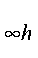
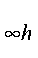

In order to identify the molecular point-group the system must be oriented in a
specific way. Four families of point-groups are checked for: (1) the infinite
groups, (2) the cubic groups, (3) groups with one high-symmetry axis, and (4)
the Abelian groups. Each family is treated differently. First, the moments of
inertia are calculated. If all are zero, the system is a single atom, and the
associated group is R3. If two moments are zero, the system is either
C
 or D
;
the presence of a horizontal plane of
symmetry distinguishes between them.
or D
;
the presence of a horizontal plane of
symmetry distinguishes between them.
Having eliminated the infinite groups, the three moments of inertia are checked to see if they are all the same. If they are, then the system is cubic. Cubic systems are oriented by identifying atoms of the set nearest to the center of symmetry. If there are 4, 6, 8, 12, or 20 of these, and the number of equidistant nearest neighbors is 3, 4, 3, 5, or 3, respectively, then the atoms are at the vertices of one of the Platonic solids (tetrahedron, octahedron, cube, icosahedron, dodecahedron), and therefore all atoms of the set lie on high-symmetry axes. The first atom is selected and used to define the z axis.
If the number of atoms in the set does not correspond to any of the Platonic solids, then the set is checked for the existence of a equilateral triangle, a square, or a regular pentagon. When one of these is found, the center of the polygon is used to define the z axis. An example of this type of system is C60, Buckminsterfullerene, which has a five-fold axis going through the center of a pentagonal face.
Once the z axis is identified, the system is checked for Cn axes, n=3 to
n=8. To complete the orientation, the system is rotated about the z axis
so that two atoms, having equal z coordinates, have equal y coordinates.
The existence of rotation axes which are not coincidental with the z axis
and the presence or absence of a center of inversion are then used to identify
which cubic group the system belongs to.
If the system has still not been identified, then the two equal moments of inertia indicate a degenerate point group. As with the cubic groups, the y and z axes (and, by implication, the x axis) are identified. The system is oriented, and the Cn and Sn axes identified.
The degenerate groups, Cn, Cnv, Cnh, Dn, Dnd, Dnh, Sn, are distinguished by the existence or absence of C2 axes perpendicular to the z axis, and by planes of symmetry.
All that remains are the Abelian groups, C1, C2, Ci, Cs, C2v, C2h, D2, and D2h. After orienting the molecule, the axes are swapped around so that the normal convention for orienting Abelian systems is obeyed. For groups C1, C2, Ci, and Cs, there is no possibility for ambiguity. For C2v and D2, however, the orientation of the system affects the labels of the irreducible representations. To prevent ambiguity, the convention for orienting Abelian molecules is:
Thus for ethylene, the π orbitals point along the x axis.